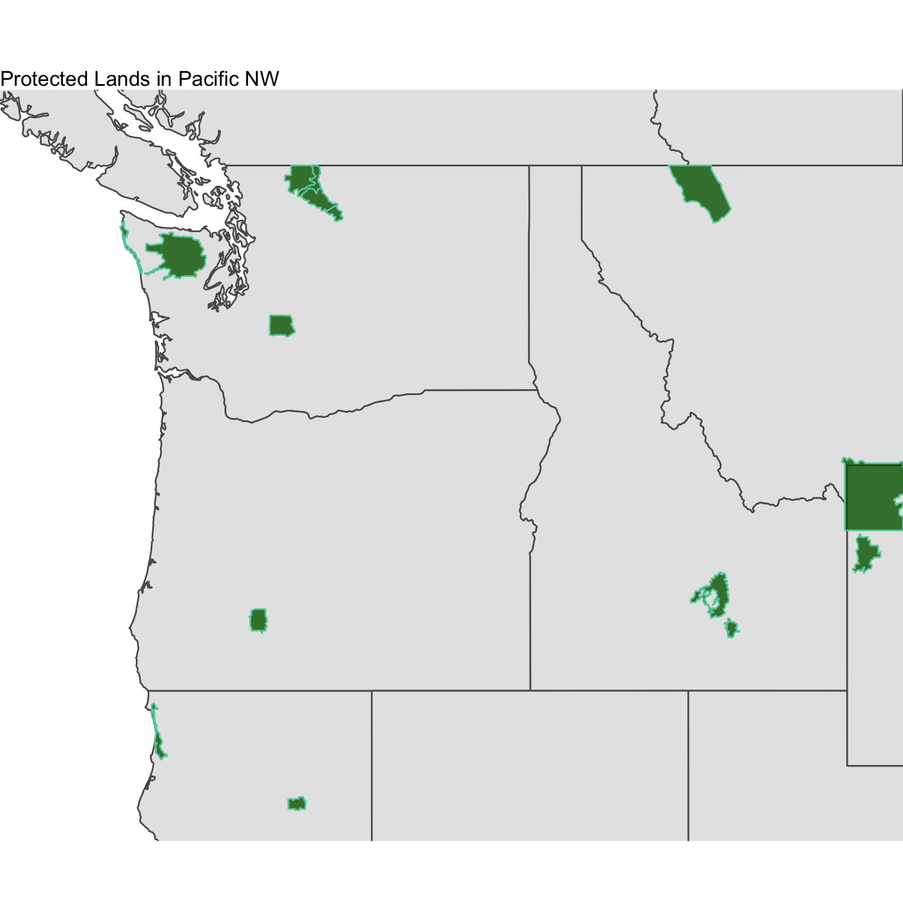

16 Week 5 Assignment - Replicate these Plots
Using the ne_10m_parks_and_protected_lands shapefile dataset, map the names of the protected lands (variable is name) in the Pacific Northwest using the methods listed below. You will need to download all of the contents of the ne_10m_parks_and_protected_lands shapefile folder. Below, a bounding lat/lon box of -127 W, -110 E, 40 S, 50 N was used for tmap plot and ggplot plot. You may use a bounding box of your choice where you see fit.
tmapggplot2mapview
Create the 3 plots above and make them look as close as possible to the ones below.
## OGR data source with driver: ESRI Shapefile
## Source: "/Users/james/Documents/Github/geog473-673/datasets/ne_10m_parks_and_protected_lands/ne_10m_parks_and_protected_lands_area.shp", layer: "ne_10m_parks_and_protected_lands_area"
## with 61 features
## It has 8 fields
## Integer64 fields read as strings: scalerank
## OGR data source with driver: ESRI Shapefile
## Source: "/Users/james/Documents/Github/geog473-673/datasets/ne_10m_admin_1_states_provinces/ne_10m_admin_1_states_provinces.shp", layer: "ne_10m_admin_1_states_provinces"
## with 4594 features
## It has 83 fields
## Integer64 fields read as strings: ne_id## [1] "SpatialPolygonsDataFrame"
## attr(,"package")
## [1] "sp"## [1] "sf" "data.frame"
** Submit plots to UD Canvas **